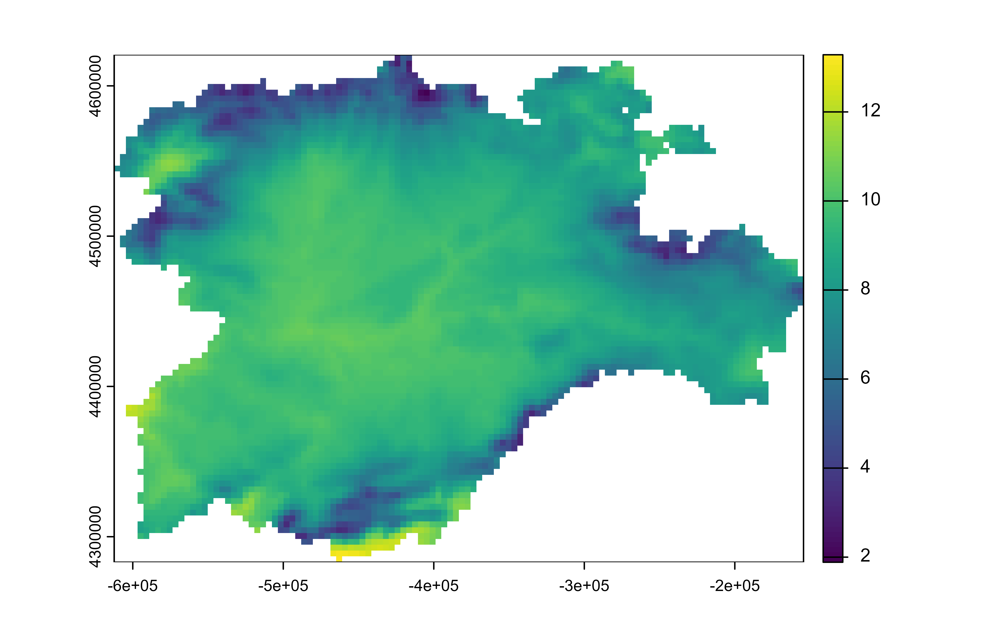
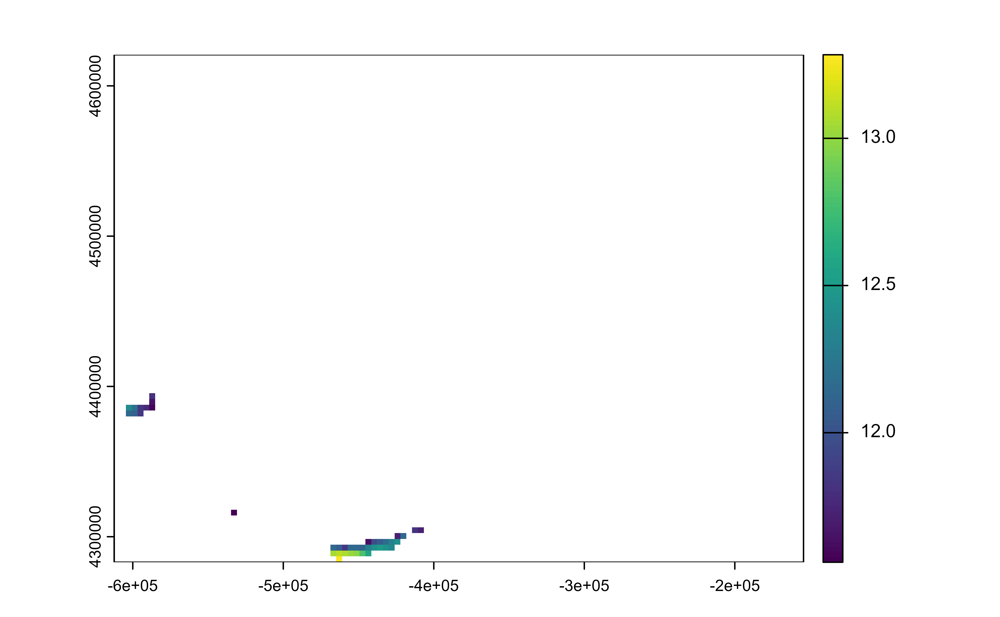
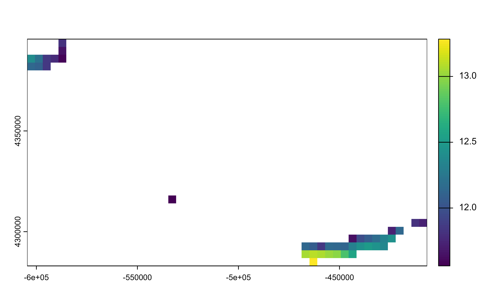
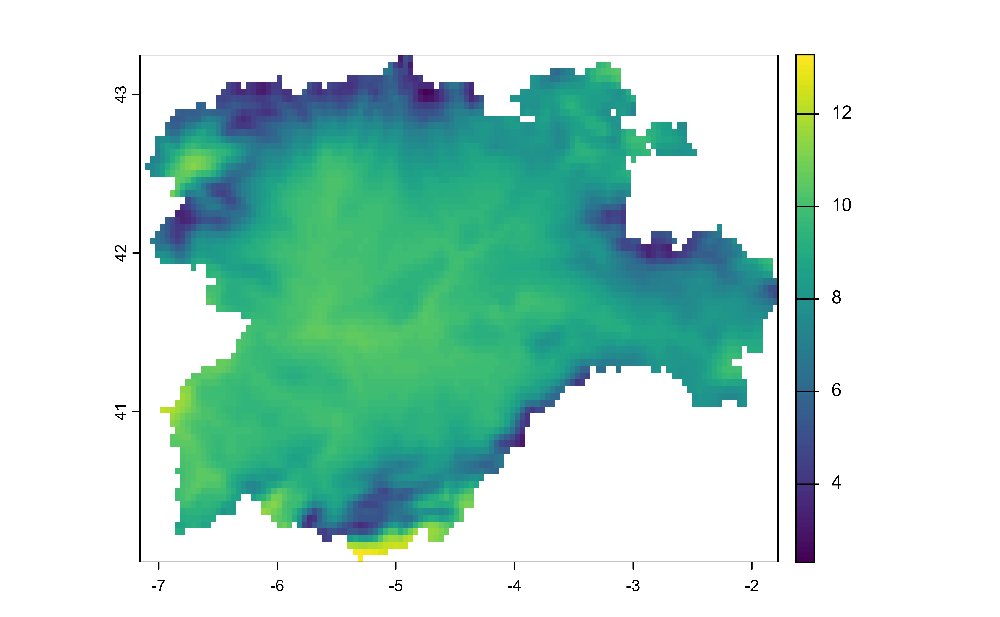
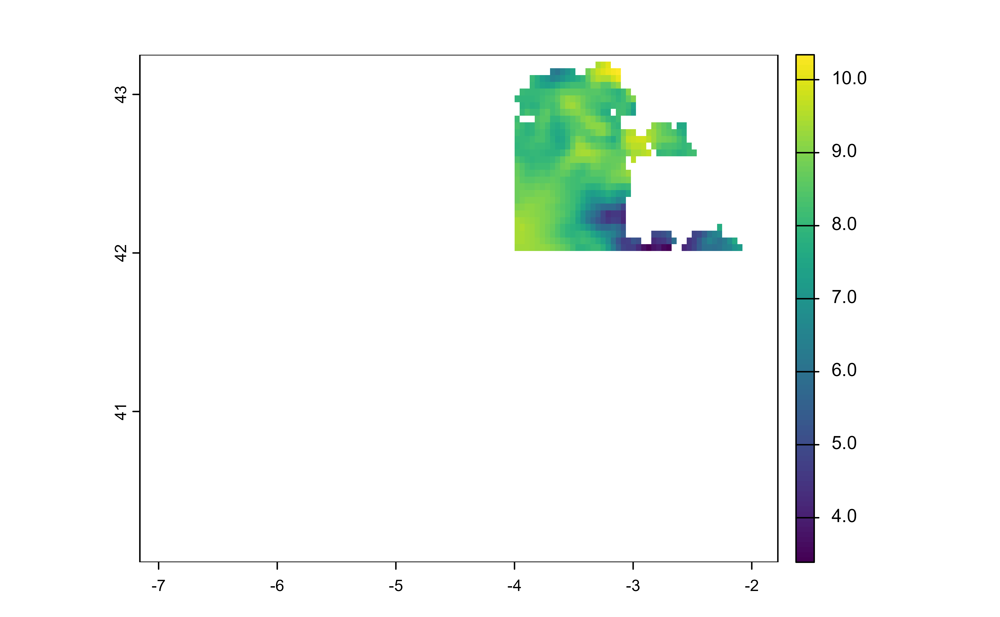

The filter() function is used to subset Spat* objects, retaining all
cells/geometries that satisfy your conditions. To be retained, the
cell/geometry must produce a value of TRUE for all conditions.
It is possible to filter a SpatRaster by its geographic coordinates.
You need to use filter(.data, x > 42). Note that x and y are reserved
names on terra, since they refer to the geographic coordinates of
the layer.
See Examples and section About layer names on as_tibble.Spat().
Arguments
- .data
A
SpatRastercreated withterra::rast()or aSpatVectorcreated withterra::vect().- ...
<
data-masking> Expressions that return a logical value, and are defined in terms of the layers/attributes in.data. If multiple expressions are included, they are combined with the&operator. Only cells/geometries for which all conditions evaluate toTRUEare kept. See Methods.- .preserve
Relevant when the
.datainput is grouped. If.preserve = FALSE(the default), the grouping structure is recalculated based on the resulting data, otherwise the grouping is kept as is.- .keep_extent
Should the extent of the resulting
SpatRasterbe kept? OnFALSE,terra::trim()is called so the extent of the result may be different of the extent of the output. See alsodrop_na.SpatRaster().- .by
![[Experimental]](figures/lifecycle-experimental.svg)
<
tidy-select> Optionally, a selection of columns to group by for just this operation, functioning as an alternative togroup_by(). For details and examples, see ?dplyr_by.
Methods
Implementation of the generic dplyr::filter() method.
SpatRaster
Cells that do not fulfill the conditions on ... are returned with value
NA. On a multi-layer SpatRaster the NA is propagated across all the
layers.
If .keep_extent = TRUE the returning SpatRaster has the same CRS, extent,
resolution and hence the same number of cells than .data. If
.keep_extent = FALSE the outer NA cells are trimmed with terra::trim(),
so the extent and number of cells may differ. The output would present in
any case the same CRS and resolution than .data.
x and y variables (i.e. the longitude and latitude of the SpatRaster)
are also available internally for filtering. See Examples.
See also
Other single table verbs:
arrange.SpatVector(),
mutate.Spat,
rename.Spat,
select.Spat,
slice.Spat,
summarise.SpatVector()
Other dplyr verbs that operate on rows:
arrange.SpatVector(),
distinct.SpatVector(),
slice.Spat
Other dplyr methods:
arrange.SpatVector(),
bind_cols.SpatVector,
bind_rows.SpatVector,
count.SpatVector(),
distinct.SpatVector(),
filter-joins.SpatVector,
glimpse.Spat,
group-by.SpatVector,
mutate-joins.SpatVector,
mutate.Spat,
pull.Spat,
relocate.Spat,
rename.Spat,
rowwise.SpatVector(),
select.Spat,
slice.Spat,
summarise.SpatVector()
Examples
library(terra)
f <- system.file("extdata/cyl_temp.tif", package = "tidyterra")
r <- rast(f) |> select(tavg_04)
plot(r)

# Filter temps
r_f <- r |> filter(tavg_04 > 11.5)
# Extent is kept
plot(r_f)

# Filter temps and extent
r_f2 <- r |> filter(tavg_04 > 11.5, .keep_extent = FALSE)
# Extent has changed
plot(r_f2)

# Filter by geographic coordinates
r2 <- project(r, "epsg:4326")
r2 |> plot()

r2 |>
filter(
x > -4,
x < -2,
y > 42
) |>
plot()
